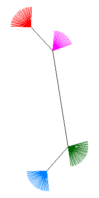

#### phyclust+paml.baseml -- Combinations of phyloclustering and maximum likelihood tree.
In the following, we demonstrate the <code>phyclust+paml.baseml</code> approach
to build a phylogeny for central/ancestral sequences. The <code>phyclust</code>
will identify clusters and centers of clusters, then followed by
<code>paml.baseml</code> to construct a tree by maximum likelihood.
The <code>paml.baseml</code> is a port from the <code>baseml</code> function
of PAML package. This <font color="green">two-stages approach</font>
(<code>phyclust+paml.baseml</code>)
is particularly useful for large datasets, and potentially more efficient than
the <font color="red">single-stage approach</font> using
<code>paml.baseml</code> on all sequences directly.
Note that the appropriate number of clusters and the best evolutionary model
for the phylogeny are required to be determined by either information criteria
or bootstrap.
<b>Opening questions:</b>
1. Is this two-stages approach meaningful?
When does this approach work or fail?
2. Is it possible to compare this two-stages approach with the single-stage
approach? How? By simulation?
3. How accurate are these two approaches compare to the true tree based on
simulation studies?
4. Is it possible or accurate to apply the single-stage approach on
<a href="../application/ex_hiv.html">the application pages of HIV</a>
which has more than 5,000 short-read fragments?
5. How about the <font color="#800000">three-stages approach</font>?
See the application page of
<a href="../application/ex_supertree.html">the application page of
Supertree</a>
for detail.
6. How about Bayesian framework to the above questions?
7. Can we control the evolving viruses by drugs?
The following code will generate a tree which is close to the true.
This tree based on maximum likelihood approach is different to the last
figure in the
<a href="./ex_demo.html">demo</a>
example based on distance approach.
Note that PAML uses multifurcation at root for an unrooted tree as
the default value <code>clock = 0</code>.
```
> ### Fit a EE, JC69 model using emEM and fit an ancestral tree.
> EMC <- .EMControl(init.procedure = "emEM")
> set.seed(1234)
> K <- 4
> ret.K <- phyclust(seq.data.toy$org, K, EMC = EMC)
> (ret.Mu <- paml.baseml(ret.K$Mu, opts = paml.baseml.control()))
((1: 0.005025, 3: 0.000004): 0.015156, 2: 0.000004, 4: 0.005025);
> (tree.est <- read.tree(text = ret.Mu$best.tree))
Phylogenetic tree with 4 tips and 2 internal nodes.
Tip labels:
[1] "1" "3" "2" "4"
Unrooted; includes branch lengths.
>
> ### Construct descent trees.
> for(k in 1:K){
+ tree.dec <- gen.star.tree(ret.K$n.class[k], total.height = ret.K$QA$Tt)
+ tree.est <- bind.tree(tree.est, tree.dec,
+ where = which(tree.est$tip.label == as.character(k)))
+ }
> est.class <- rep(1:K, ret.K$n.class)
> plotnj(unroot(tree.est), X.class = est.class, main = "tree of sequences")
```
<center>
</img>
</center>
The colored branches are estimated by <code>phyclust</code>, and each
color represents a cluster characterized by a central sequences.
Using these four central sequences, the internal branches are
constructed and estimated by <code>paml.baseml</code>.
This is exactly the same topology where this toy data generated from
except the length of branches may not estimate accurately.
While the last figure in the <a href="./ex_demo.html">demo</a>
example based on distance approach gives the other illustration for the
same dataset.
---
<div w3-include-html="../preamble_tail_date.html"></div>